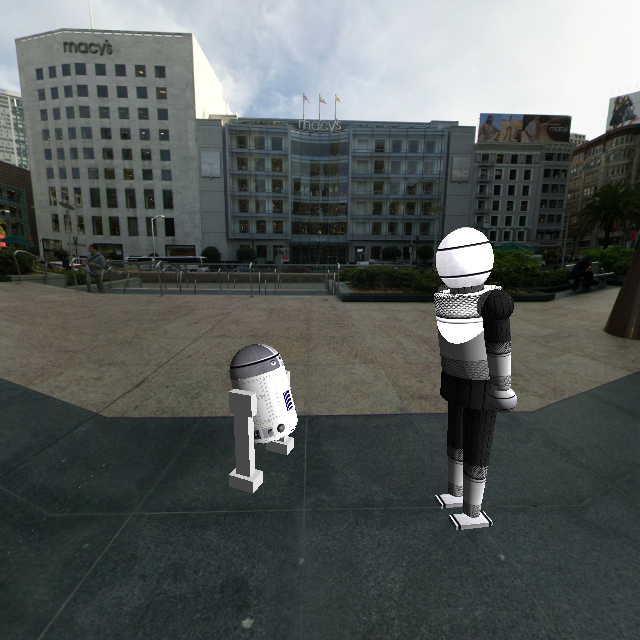
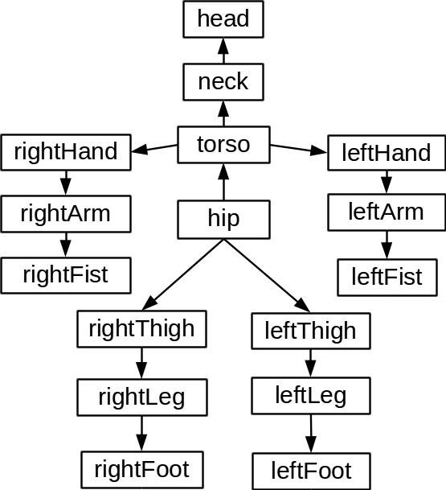
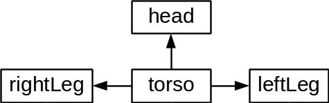
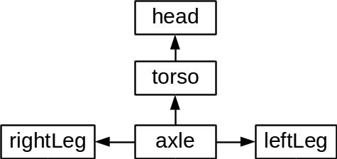
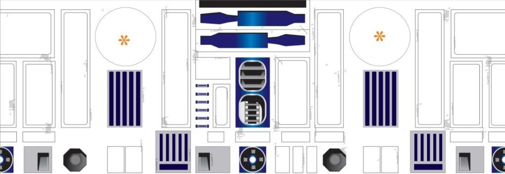

CS675 Assignment 3 (Droids - Modelling and Rendering)
Anshuman Kumar and Ravi Chalasani

R2D2 meets a humanoid robot at Union Square (SFO)
Table of Contents
1 Modelling the Environment
A textured environment cube is used for the environment. In the screenshot above, an outside environment is shown. It is also possible to have an indoor environment.
2 Modelling the Humanoid Droid: Hierarchical Tree and DOFs
The following hierarchial model was used for the humanoid robot:

Humanoid model's hierarchial tree
| Joint | Nr. of DOFs |
|---|---|
| hip/torso | 1 |
| torso/shoulder | 3 |
| hip/thigh | 3 |
| elbow | 1 |
| knee | 1 |
3 Modelling The Non-Humanoid Droid: Hierarchical Tree and DOFs
Initially the following tree was used, but it was cumbersome to make the torso bend. Doing so involved first rotating the torso and then rotating the legs in the opposite direction. As the torso was the root, rotating it, rotated the whole model.

R2D2's initial hierarchical tree
So a dummy root node, labelled `axle' below was used to attach the legs to.

R2D2's hierarchical tree
| Joint | Nr. of DOFs |
|---|---|
| axle/torso | 1 |
| torso/head | 1 |
4 Lighting and Textures
Several primitive shapes were coded up (partial ellipsoids, cuboids, conical frustrums) and for each of these, along with the vertex coordinates and color, texture coordinates and normals were computed and stored. These were used to apply textures and compute lighting respectively.
The basic struct for storing vertices is:
struct Point
{
float x;
float y;
float z;
float w;
float cx;
float cy;
float cz;
float ca;
float nx;
float ny;
float nz;
float tx;
float ty;
};
using PointV = std::vector<Point>;
4.1 Example Textures
Texture used on humanoid robot

R2D2 torso texture
4.2 Lighting
As required two general directional lights to light the scene, and one spot light on the robots have been placed. The keys to control these lights are described in the keyboard bindings section.
5 Keyboard Bindings
| key | binding |
|---|---|
| ESC | quit application |
| tab | swap controlled robot |
| j | toggle light 1 |
| k | toggle light 2 |
| l | toggle spot light |
| 1 | bend forward at hip |
| 2 | bend backward at hip |
| 3 | bend left hand forward at elbow |
| 4 | bend right hand forward at elbow |
| 3 | r2d2: rotate head left |
| 4 | r2d2: rotate head right |
| 5 | bend left hand backward at elbow |
| 6 | bend right hand backward at elbow |
| 7 | bend arms backward at shoulder |
| 8 | bend arms forward at shoulder |
| 9 | bend arms up at shoulder |
| 0 | bend arms down at shoulder |
| q | make humanoid robot walk |
| arrow keys | rotate perspective camera |
| z, x | move perspective camera forward/backward |
| w, s | move robot forward/backward |
| a, d | rotate robot about y axis |
Date: 2015-10-20 22:39:51 IST